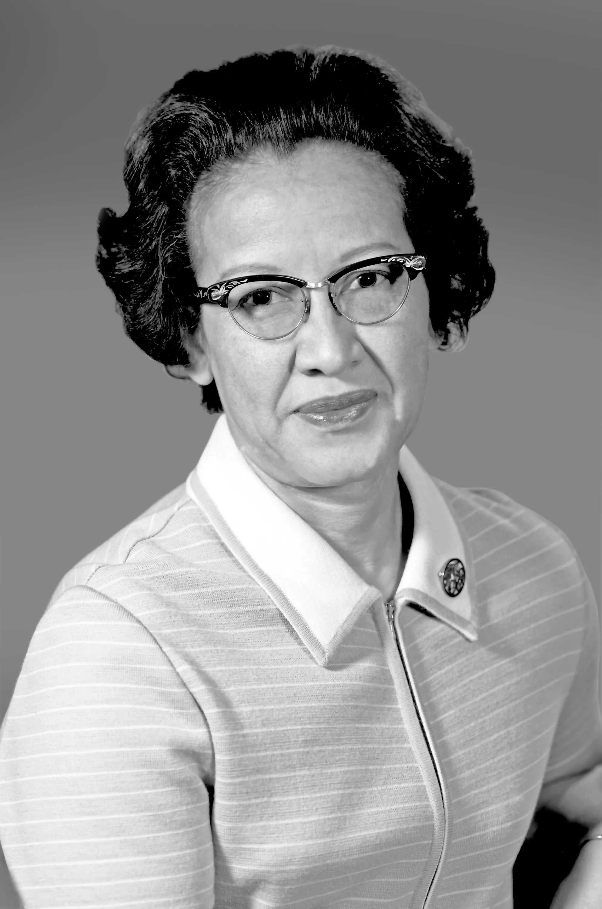
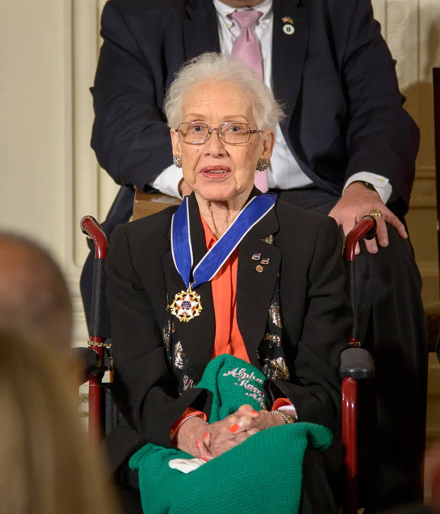

Biography
Born: Aug. 26, 1918 (White Sulphur Springs, WV)
Died: Feb. 24, 2020
Education: B.S. Mathematics & French, PhD in Mathematics
Childhood & Early Talent
Katherine was a child prodigy who showed an exceptional talent for mathematics from a very young age, famously counting everything around her. Because her hometown did not offer schooling for Black students beyond the 8th grade, her family moved specifically to ensure she could continue her education.
Education & Academic Mentorship
At age 18, she received a B.S. degree in Mathematics and French from West Virginia State University. There, Professor Claytor personally supported her development in advanced mathematics. Notably, she became the third African American to earn a PhD in Mathematics.
Early Career
Initially, she worked as a teacher in elementary and high schools—one of the few career options available to Black women at the time. She took breaks to raise her children and returned to teaching before joining NACA in 1953.
Entry into NASA (NACA)
In 1953, she joined the National Advisory Committee for Aeronautics (NACA) at the Langley Laboratory. She started in the all-Black West Area Computing section as a "human computer", solving complex calculations by hand.
She stood out by asking questions and joining meetings that women were not expected to attend. In 1960, she became the first woman in her division to receive credit as an author for a research report, laying the theoretical base for human space flight.
Space Race Milestones
1961: Freedom 7
Katherine Johnson provided the trajectory analysis for Alan Shepard's May 1961 mission, Freedom 7, which marked America's first human spaceflight.
1962: Mercury Atlas 6
John Glenn famously requested Katherine to verify the electronic computer's orbital calculations by hand, stating: "If she says it's good, I'm ready to take off".
1969: Apollo 11
Johnson calculated the trajectory for the 1969 Moon landing, focusing on syncing the Lunar Module with the lunar-orbiting Command and Service Module.
1970: Apollo 13
When the mission failed, her backup procedures and emergency trajectory calculations were essential in helping the spacecraft return safely to Earth.
Challenges as a Woman of Color
Discrimination
Racism & Sexism at NASA
Working in the 1950s, Katherine faced double discrimination. NASA (then NACA) followed Virginia's Jim Crow laws, meaning she worked in segregated offices, used separate restrooms, and ate in different cafeterias from her white colleagues.
Overcoming Barriers
Persistence & Excellence
Katherine famously refused to use the segregated restrooms. By delivering perfect calculations and asking "why," she won the respect of engineers, proving that excellence is the most powerful tool against prejudice.
Impact of Her Work
Legacy in Flight
Influence on Space Exploration
Katherine Johnson did not just calculate numbers; she ensured mission safety. Her critical role in early space missions defined the margin of error for NASA and proved human intellect was the ultimate backup.
Breaking Boundaries
Role Model in STEM
Today, she stands as a global inspiration for women and minorities in STEM. She showed that the universe's complex problems are best solved when we allow the best minds to lead, regardless of gender or race.
Achievements & Recognition
NASA Career Highlights
NASA Group Achievement Awards
Throughout her career, she received the NASA Lunar Orbiter Award and 3 NASA Special Achievement Awards.
2015
Presidential Medal of Freedom
Awarded by President Barack Obama for her pioneering work in STEM and civil rights.
2019
Congressional Gold Medal
Highest expression of national appreciation for distinguished achievements.

Personal Contribution & Reflection
Reflection & Impact: Studying Johnson's life underscores a core principle of our course: that scientific progress is inseparable from social equity. Her ability to verify computer calculations was more than a technical feat; it was a symbolic victory for women in a field where their intellectual capacity was systematically doubted. When we exclude specific groups based on gender or race, we do not only commit a social injustice, but we also limit the collective potential of human innovation. Katherine's story teaches us that the barriers to scientific advancement are often social and cultural, not technical. By recognizing and dismantling these barriers, we can create a more inclusive and innovative scientific community that benefits everyone. Ultimately, true excellence in science is achieved only when the barriers to entry are removed for everyone.
Bibliography & References
- Loff, S. (2020). Katherine Johnson Biography. NASA. Retrieved from nasa.gov/katherine-johnson-biography
- Wikipedia Contributors. (2024). Katherine Johnson. Wikipedia, The Free Encyclopedia. Retrieved from en.wikipedia.org/wiki/Katherine_Johnson